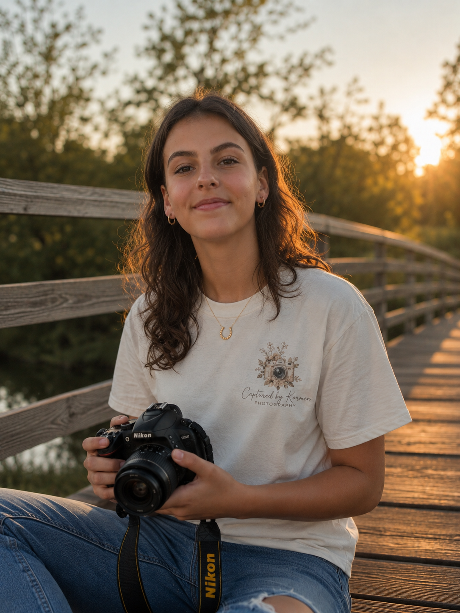

Start with an email
Tell us what you have in mind and ask about availability.
Mount Sterling, Kentucky and surrounding communities
Relaxed, natural photography with room for real smiles and the moments in between.

Portfolio
This gallery will feature Karmen’s own photographs, shared only with permission.
About Karmen
Karmen is drawn to warm light and the details that make a photo personal: a quiet look, a burst of laughter, or a hand reaching for another.
She wants being in front of the camera to feel easy, not like a performance.
A thoughtful experience
A parent or guardian coordinates session timing, locations, and permissions.
Tell us what you have in mind and ask about availability.
We’ll talk through what you have in mind before the session.
Permission to take photos and permission to share them are separate.
Get in touch
Tell us what you’re picturing and when. A parent or guardian will reply.
Email Captured by Karmencbk@rogersholdingsllc.com
Please leave out photos and sensitive details in your first email.